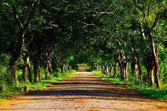
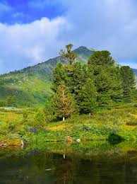

I recently visited a beautiful countryside area filled with green fields and fresh air. The peaceful environment helped me relax and forget the busy city life. Walking along the small roads surrounded by trees was a wonderful experience.
The morning weather was cool and pleasant. Birds were chirping and the sunlight slowly spread across the hills. I spent hours exploring different places and taking photos of nature.

In the evening, the sunset looked amazing near the lake. The reflection of the sun on the water created a golden glow everywhere. Many visitors gathered there to enjoy the beautiful view and take pictures.
This trip reminded me that spending time in nature is important for our health and mind. I plan to visit again during the winter season.